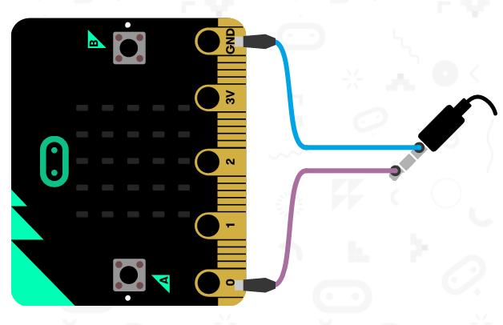

Autorom tohto materiálu je Marek Mansell, ktorý spolu s kolegami zo združenia SPy pripravuje pre Vás otvorene licencované materiály. Veľká vďaka partí najmä Eve Klimekovej a Nike Klimovej za metodické pripomienkovanie.
Prosím, napíšte nám pripomienky, otázky a akúkoľvek spätnú väzbu (aj negatívnu)
Kontakt na mňa:
marek.mansell@pycon.sk
Licencia CC BY 4.0
Táto licencie Ti umožňuje používať tento materiál akokoľvek uznáš za vhodné, pod podmienkou uvedenia autora.
Celé znenie licencie6. Hudba - Kohútik Jarabý
Pracujeme...
Táto kapitola je ešte rozpracovaná, zatiaľ tu nájdeš iba základné informácie. V najbližšom čase ju budeme ešte dopĺňať.
BBC micro:bit dokáže prehrávať hudbu na klasických reproduktoroch vďaka posielaniu signálov cez pin 0. Ukážeme si, ako reproduktor zapojiť a ako na ňom prehrávať vlastnú hudbu.
Pripojenie reproduktoru
Využiť môžeme akýkoľvek reproduktor, ktorý má klasickú koncovku - tá sa nazýva 3,5mm Jack. Ten má obvykle 3 sekcie predelené plastovými krúžkami - prvá časť posiela signál ľavému reprodiktoru, druhá pravému reproduktoru a posledná slúži ako spoločná zem pre oba reproduktory. My budeme s micro:bitom ale prehrávať hudbu iba na jednom reproduktore, a preto pripojíme k micro:bitu prvú sekciu - pre ľavý reproduktor - s Pinom 0 na micro:bite. Piny sú vodivé plôšky na spodnej strane micro:bitu, vďaka ktorým k micro:bitu pripájame rôzne senzory a aktory. Na prepojenie používame krokosvorkový káblik. Nesmieme ešte zabudnúť prepojiť zem (anglicky GROUND). (na konci záber na hotový setup)

Predprogramovaná hudba
import music
music.play(music.BIRTHDAY)
Na programovanie hudby v MicroPythone nám poslúži modul music, (import music) v ktorom sa nachádza metóda play, ktorej ako parameter musíme zadať, akú melódiu má prehrať. (music.play()) Modul už v sebe obsahuje aj nejaké predprogramované melódie, Mu editor nám napovedá, ako sa volajú. Vyskúšame prehrať napríklad melódiu BIRTHDAY (music.play(music.BIRTHDAY)).
- music - kinižnica na generovanie hudby na pine 0
- music.BIRTHDAY - prehrá melódiu BIRTHDAY
micro:bit už má niekoľko predprogramovaných melódií, tie nájdete v - dokumentácii (pozri Music)
Nefunguje mi to...
Po nahratí na micro:bit by sa nám mala prehrať melódia. V opačnom prípade skúste skontrolovať zapojenie, nakoľko krokosvorky na micro:bite aj na JACK konektore sa môžu ľahko posunúť.
Písanie vlastnej hudby - Kohútik Jarabý
Teraz sa posunieme ďalej a naprogramujeme si pieseň Kohútik jarabý, tón po tóne. Keď sa pozrieme na noty pre túto pieseň, tak dôležté sú pre nás dve informácie - umiestnenie nôt na čiarach a to, ako vyzerajú. Kým pozícia na čiare určuje tón noty (napríklad C, D, atď), to, ako nota vyzerá určuje trvanie noty (udáva sa v úderoch). Tóny nôt nájdete v tomto prípade vypísané nad každou notou (toto sa štandardne nerobí), trvanie určite podľa tabuľky nižšie. Prvá nota je osminová nota C, a teda bude trvať pol úderu, druhá je osminová nota D, tretia je štvrťová nota E, a tak ďalej.


Teraz už len stačí noty prepísať do MicroPythonu a pomocou funkcie music.play prehrať. Noty si uložíme do zoznamu, čiže premennej, ktorá si pamätá viac informácií, v našom prípade viac nôt. Tento zoznam si pomenujeme kohutik a do hranatých zátvoriek začneme písať noty. Pre každý notu dáme do úvodzoviek dve informácie - tón noty a dĺžku trvania - oddelené dvojbodkou. Pre prvú not teda zadáme C-čko, a za dvojbodkou jej trvanie. Vieme, že nota by mala byť na pol úderu, no modul music nám, žiaľ, neumožnuje zadať polovičnú hodnotu. Preto všetky hodnoty prenásobíme dvojkou - pre polúderovú osminovú notu zadáme jednotku a pre pre jednoúderovú štvrťovú notu zadáme dvojku. Takto pokračujeme, až vypíšeme celú pieseň, tón po tóne. Napísanú pieseň potom už iba prehráme pomocou music.play(kohutik).
import music
kohutik = ["C:2", "D:2", "E:4", "F:4", "F:2", "F:2"]
music.play(kohutik)
Úloha
Pokračuj v prepisovaní nôt a prehraj na micro:bite celú pieseň.
Týmto spôsobom vieme prehrávať na mico:bite prakticky akúkoľvek pieseň. Skúste si napríklad nájsť na internete noty k zvučke od Harry Pottera a prehrať na micro:bite.
Rolničky
# Piesen Rolnicky
import music
tune = ["E:2", "E:2", "E:4", "E:2", "E:2", "E:4", "E:2", "G:2", "C:3", "D:1",
"E:8", ]
music.play(tune)
Úloha
Pokračuj v prepisovaní nôt a prehraj na micro:bite celú pieseň.